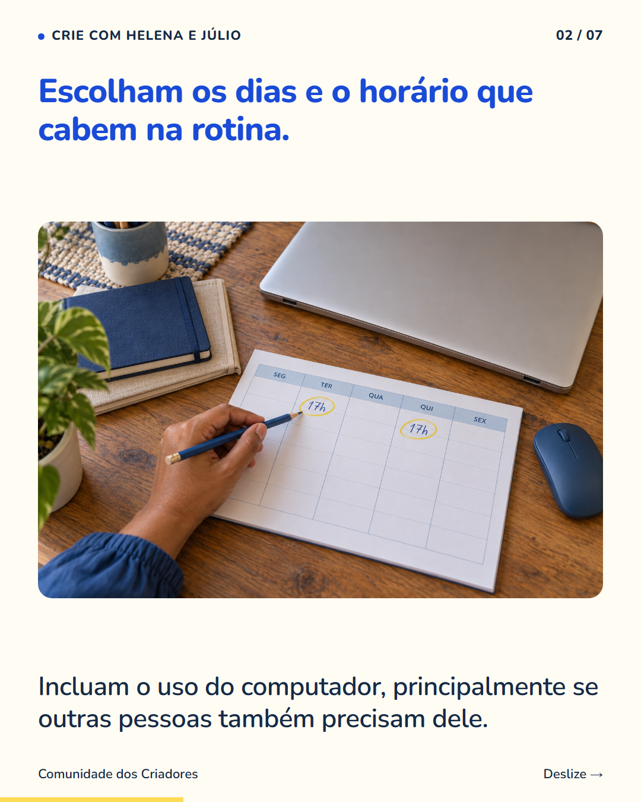
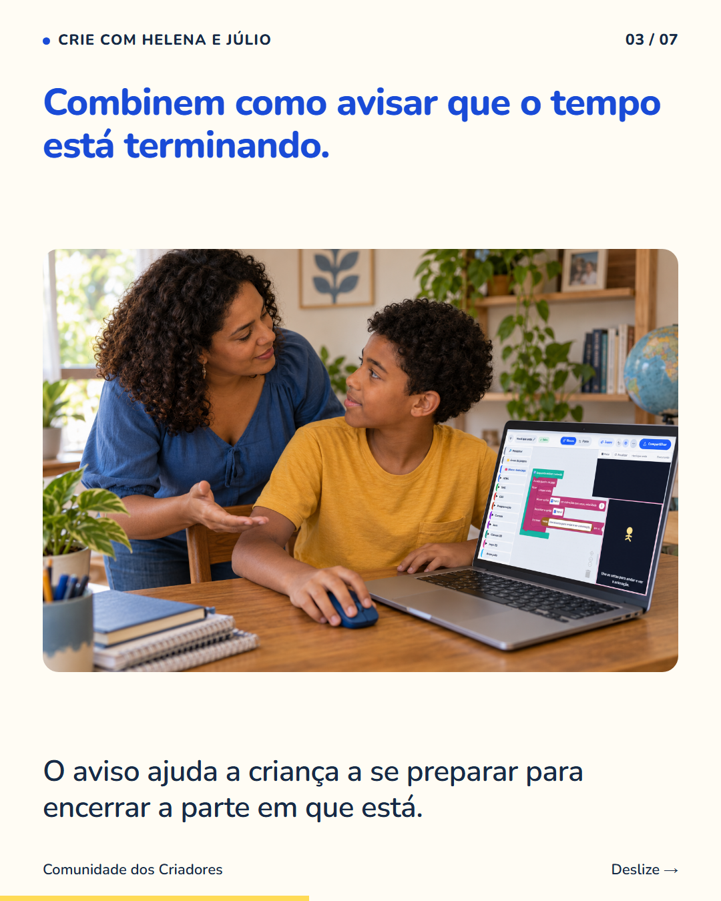
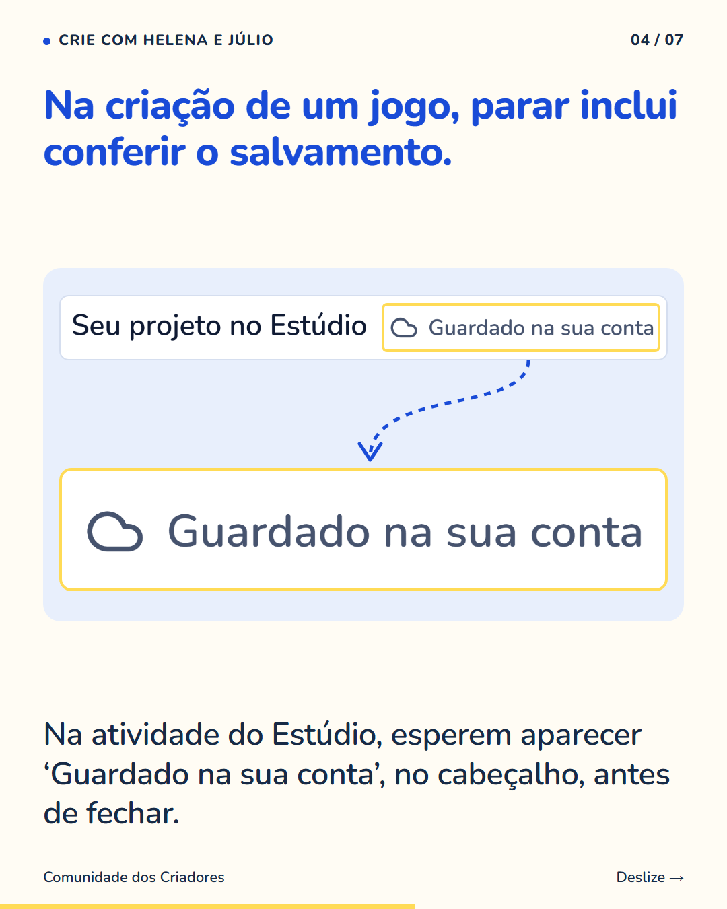
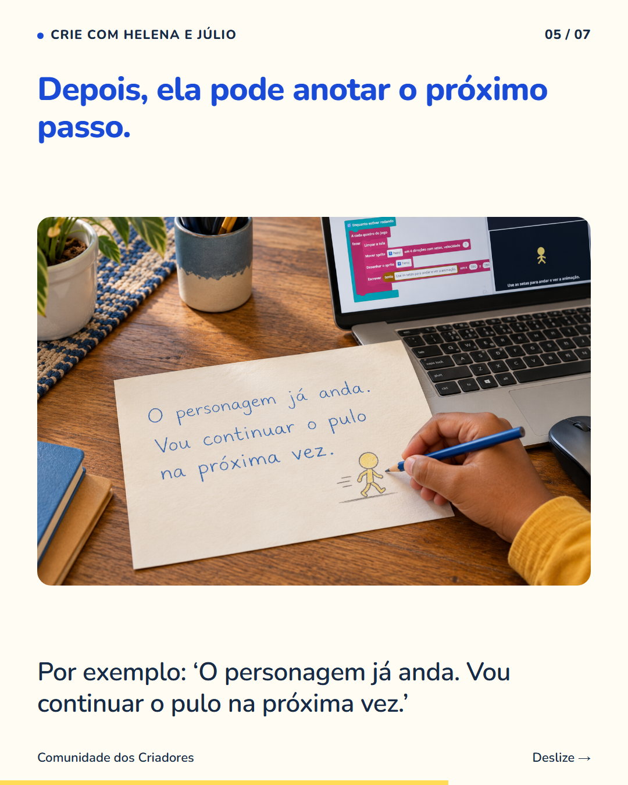
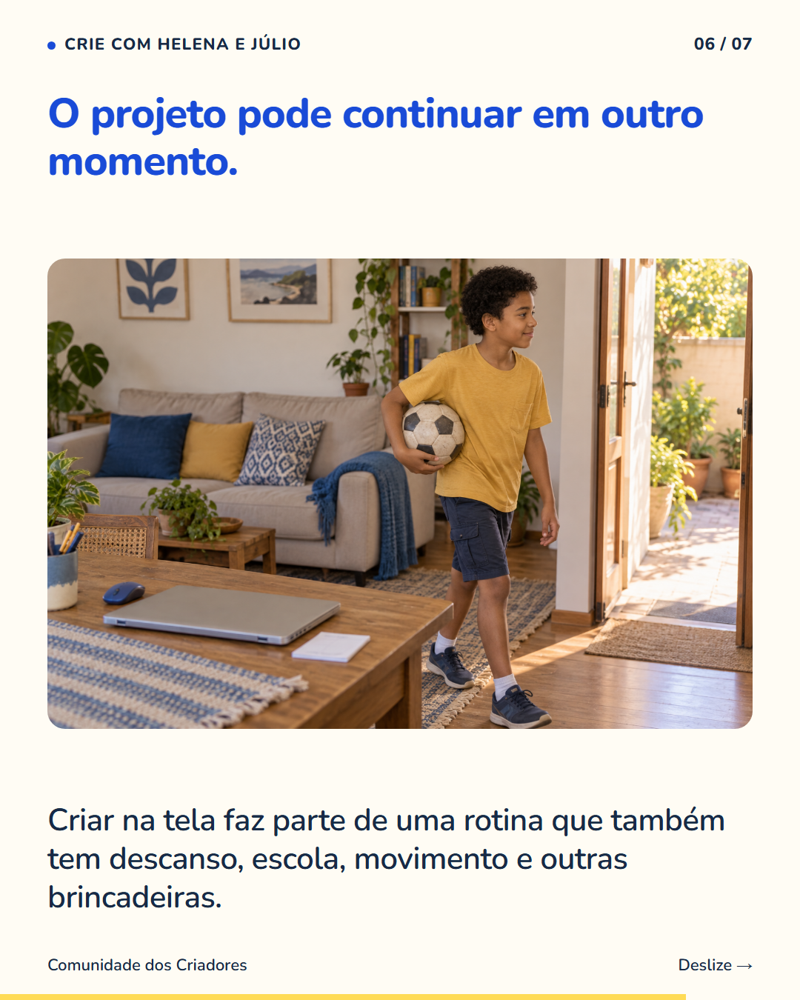
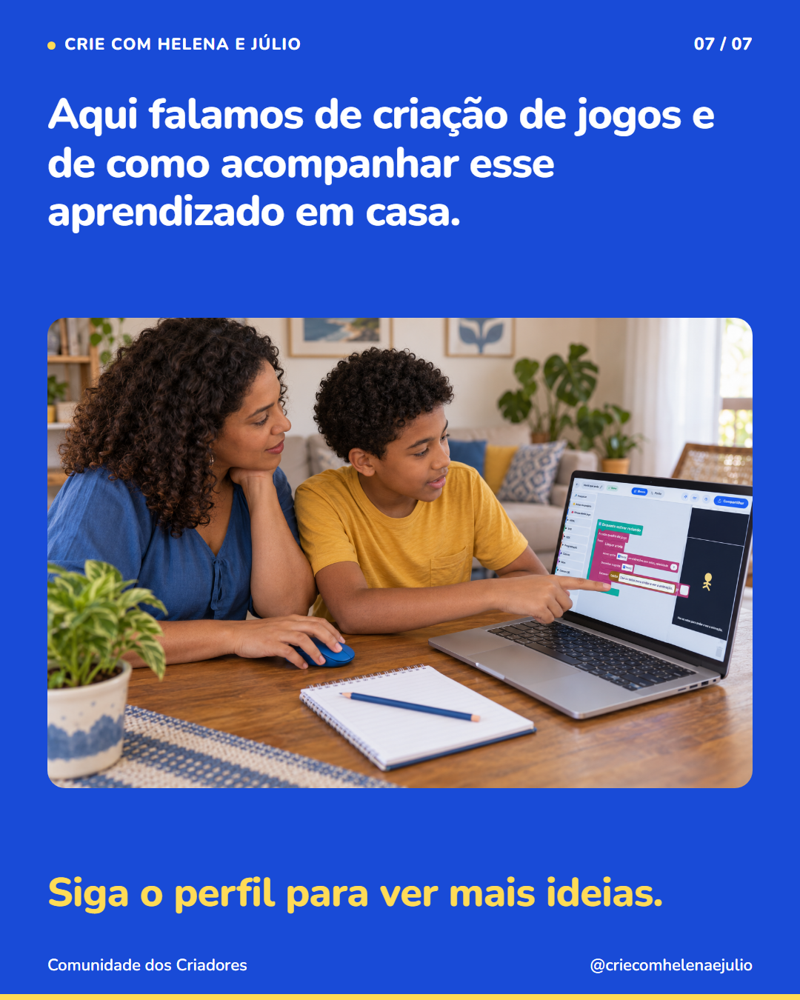

7 slides · 1080 × 1350 · Copy revisada · Combinados, salvamento e o próximo passo






Combinar o horário antes de começar dá à criança uma referência para organizar a atividade. Conversem sobre quando usar o computador e como avisar que está chegando a hora de parar. Ao criar um jogo, deixem espaço para conferir o salvamento e lembrar de onde continuar. Na atividade do Estúdio, esperem ‘Guardado na sua conta’, no cabeçalho, antes de fechar. O combinado pode precisar de ajustes depois que vocês conhecem melhor a rotina. Criar jogos também é tempo de tela e divide espaço com as outras atividades da família. Siga o perfil para conhecer formas de acompanhar a criação dos seus filhos.